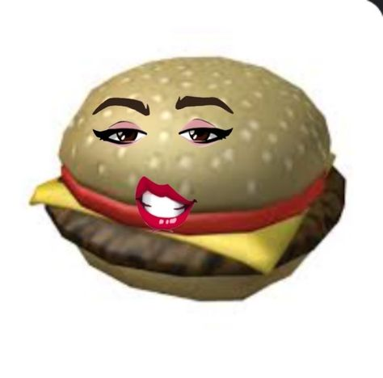

- Different Kinds of Burger
- Where is Kris Jenner?
- Death
Onika Burger, also known as She=Onika Ate=Burgers, refers to a Nicki Minaj meme that was started by a Twitter reply in which a user named @sexxtbook stated that Nicki Minaj (whose real name is Onika Tanya Maraj-Petty) eats burgers, as in, she's overweight. The reply was referencing the previous reply that proclaimed North West "ate" (as in she did well at) drawing her grandmother Kris Jenner. Twitter user @sexxtbook took the opportunity to criticize Minaj by claiming that she eats burgers, using her real name Onika in tow. The tweet inspired multiple Onika Burger memes within Stan Twitter circles going into February 2023 that mostly joked about the funny and semi-nonsensical nature of the original reply.
